Terakhir diperbarui: 11 November 2026
Mazduino Racedash¶
Gambaran Umum¶
Mazduino Racedash adalah dash display digital yang menampilkan data real-time dari ECU, seperti RPM, gear indicator, kecepatan, dan berbagai data sensor lainnya. Halaman ini membahas varian layar 3.5" dan 4". Untuk varian layar lebih besar (4.3", 5", dan 7"), lihat Mazduino Racedash Pro.
| Varian | Ukuran Layar | Konektor |
|---|---|---|
| Racedash 3.5" | 3.5 inch | JST 4 Pin |
| Racedash 4" (Cabus) | 4 inch | DTM4 (Deutsch DTM 4 Pin) |
Kedua varian diatur dari HP dengan aplikasi DashTune, lewat WiFi yang dipancarkan dash. Langsung ke Pengaturan lewat DashTune.
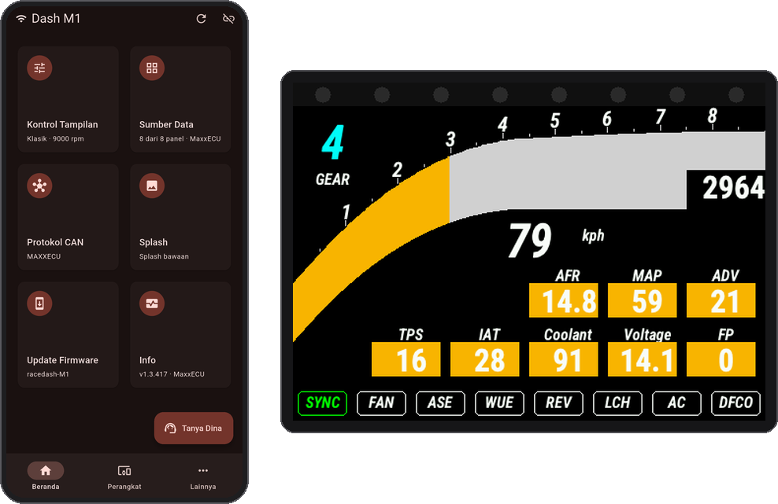
Kiri: halaman utama DashTune saat tersambung ke dash. Kanan: layar dash dengan template Klasik.
Fitur Utama¶
- Layar digital menampilkan RPM, gear indicator, kecepatan, dan data sensor lain secara real-time
- Diatur dari aplikasi Android DashTune: template layar, data tiap panel, lampu indikator, protokol ECU, splash screen, dan update firmware, semuanya dari HP
- Dua template layar: Klasik (bar RPM, gear, speed, dan panel kotak) dan Grid (satu layar penuh berisi panel data)
- Mendukung komunikasi ke ECU melalui CAN Bus atau Serial, tergantung permintaan saat order dan ECU yang digunakan. ECU berbasis Speeduino wajib menggunakan mode Serial (berlaku untuk varian JST 4 Pin maupun DTM4), sedangkan rusEFI, Haltech, dan MaxxECU menggunakan mode CAN Bus
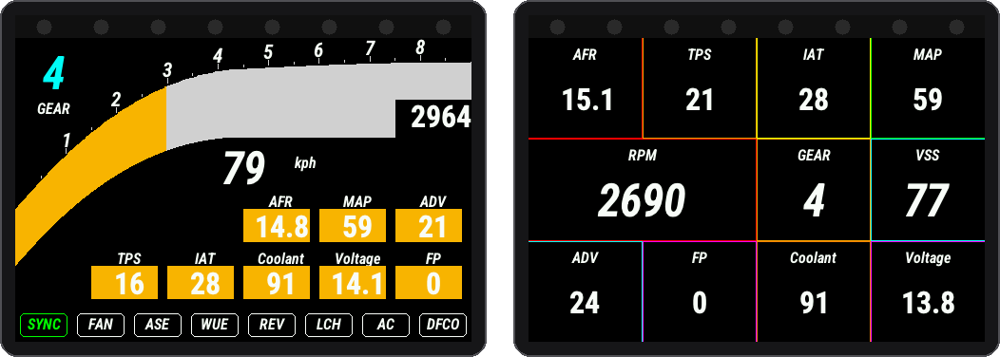
Template Klasik (kiri) dan Grid (kanan)
Sisi ECU juga harus diatur. Dash hanya mendengarkan — ECU yang harus menyiarkan datanya, pada kecepatan CAN yang tepat. Lihat Konfigurasi ECU untuk Racedash.
Racedash 3.5" (Konektor JST 4 Pin)¶
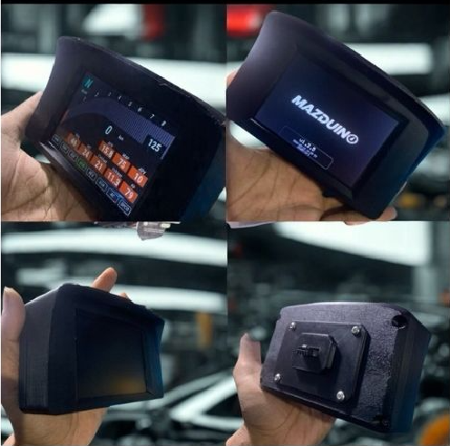
Varian ini menggunakan konektor JST 4 Pin yang ringkas untuk instalasi cepat. Tidak ada port USB yang terekspos di luar case — update firmware dilakukan lewat WiFi, lihat bagian Update Firmware.
Konektor JST 4 Pin (Wiring ke Kendaraan)¶
Konektor eksternal yang digunakan untuk menghubungkan Racedash ke kendaraan/ECU.
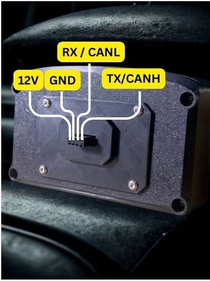
| Pin | Fungsi |
|---|---|
| 1 | 12V |
| 2 | GND |
| 3 | RX / CANL |
| 4 | TX / CANH |
Racedash 4" / Cabus (Konektor DTM4)¶
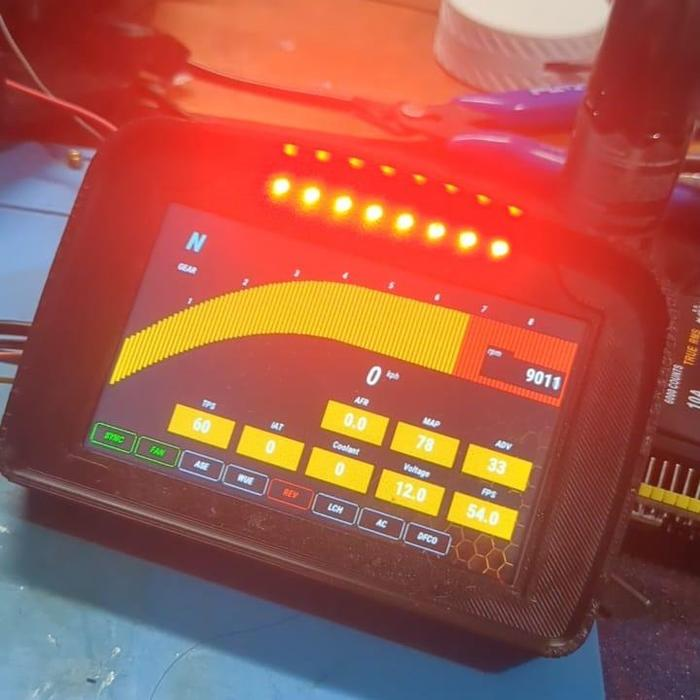
Racedash 4" saat menyala — bar RPM, indikator gigi, dan deretan lampu peringatan di bawah layar
Varian ini menggunakan konektor DTM4 (Deutsch DTM 4 Pin) yang tahan getaran dan cuaca, cocok untuk aplikasi racing. Komunikasi ke ECU dilakukan melalui CAN Bus, kecuali untuk ECU Speeduino yang menggunakan mode Serial (secondary serial dari Arduino Mega).
Konektor DTM4 / 4 Pin¶

Dash connector side

Cable connector side
| No. Pin | Deskripsi |
|---|---|
| 1 | 12V Power Supply |
| 2 | Ground |
| 3 | CAN High / TX |
| 4 | CAN Low / RX |
Catatan:
- Pin 3 dan 4 berfungsi sebagai CAN High/CAN Low untuk ECU rusEFI, Haltech, dan MaxxECU (mode CAN Bus).
- Khusus untuk ECU Speeduino, pin 3 dan 4 berfungsi sebagai TX/RX Serial — Speeduino tidak memiliki CAN Bus native, sehingga data diambil melalui secondary serial (Serial3) Arduino Mega.
Pengaturan lewat DashTune¶
DashTune adalah aplikasi Android resmi untuk mengatur Racedash. Semua yang dulu diatur lewat browser (Display Control) dan Splash Screen Generator sekarang ada di satu aplikasi, dan bisa dipakai tanpa koneksi internet selama HP tersambung ke WiFi dash.
Racedash 3.5" dan 4" tersambung ke DashTune lewat WiFi. Racedash Pro (M4/M5/M7) memakai Bluetooth — panduannya ada di halaman Racedash Pro.
1. Pasang DashTune¶
DashTune masih dalam tahap uji, jadi dipasang lewat program tester Google Play. Buka www.mazduino.com/dashtune/tester dari HP Android, lalu ikuti tiga langkah di sana dengan akun Google yang sama dengan yang aktif di Play Store:
- Bergabung ke grup tester DashTune.
- Tekan Become a tester di halaman tester Google Play.
- Pasang DashTune dari Play Store.
Kalau Play Store menampilkan "Can't download DashTune", lihat langkah perbaikannya.
2. Sambungkan ke dash¶
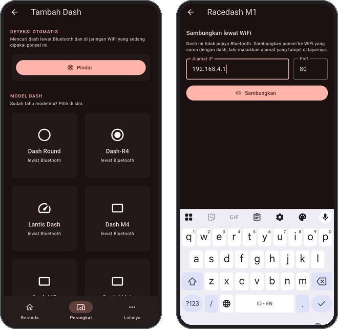
- Nyalakan dash, lalu sambungkan WiFi HP ke "MAZDUINO_Display" dengan password "12345678". Kalau Android bertanya karena WiFi ini tidak punya internet, pilih tetap tersambung.
- Buka DashTune, masuk ke tab Perangkat, lalu tekan Tambah Dash.
- Tekan Pindai. Dash akan ditemukan di jaringan WiFi yang sedang dipakai HP.
- Kalau tidak ditemukan, pilih model Racedash Anda di bagian Model Dash,
isi Alamat IP
192.168.4.1(port80), lalu tekan Sambungkan.
Setelah tersambung, dash muncul di tab Beranda dalam bentuk kartu-kartu menu: Kontrol Tampilan, Sumber Data, Protokol CAN, Splash, Update Firmware, dan Info.
3. Kontrol Tampilan¶
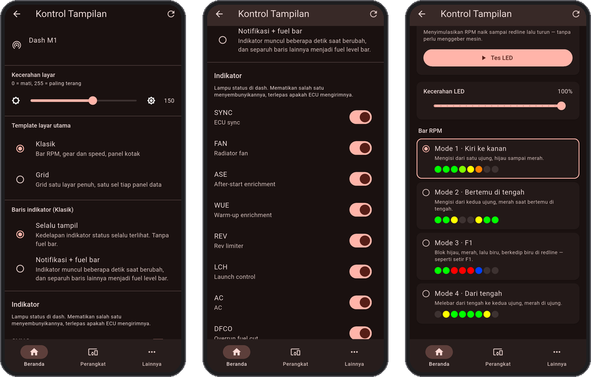
Semua yang tampil di layar diatur di sini, dan langsung dikirim ke dash.
- Kecerahan layar — 0 = mati, 255 = paling terang.
- Template layar utama — Klasik (bar RPM, gear, speed, panel kotak) atau Grid (satu layar penuh, satu sel tiap panel data).
- Baris indikator (Klasik) — Selalu tampil: delapan lampu status selalu terlihat. Notifikasi + fuel bar: lampu muncul beberapa detik saat berubah, dan separuh baris lainnya menjadi fuel level bar.
- Indikator — nyalakan atau matikan tiap lampu: SYNC, FAN, ASE, WUE, REV, LCH, AC, DFCO, FPMP, CEL, FAN2, KNOCK, TC, ANTL, SCUT. Mematikan lampu hanya menyembunyikannya di layar, terlepas apakah ECU mengirimnya.
- Skala bar RPM — RPM maksimum bar di layar, 1000–20000.
- RPM shift light — strip LED di atas layar: RPM mulai menyala, Kecerahan LED, pola Bar RPM (Mode 1–4), dan tombol Tes LED untuk mencobanya tanpa menggeber mesin.
Pengaturan RPM shift light hanya muncul pada dash yang memang memiliki strip LED-nya.
4. Sumber Data¶
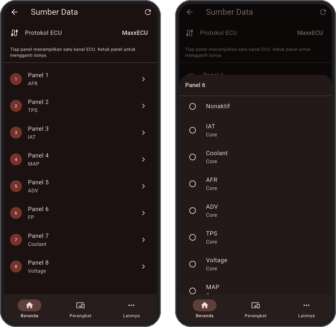
Racedash punya 8 panel data. Ketuk panel untuk memilih data yang ditampilkan, misalnya AFR, TPS, IAT, MAP, Coolant, Voltage, atau ADV. Pilih Nonaktif untuk mengosongkan panel.
5. Protokol CAN¶
Menu ini menunjukkan protokol ECU yang dibaca dash dan bitrate CAN-nya. Firmware Racedash 3.5" dan 4" (M1, M2, M3, C1) dibuat untuk satu ECU sesuai pesanan, jadi di sini hanya protokol ECU itu dan Custom yang bisa dipilih. Ini berbeda dengan Racedash Pro (M4, M5, M7, M7 Pro), yang protokolnya bisa diganti langsung dari setting. Custom dipakai untuk ECU yang tidak ada di daftar, dengan peta data CAN yang diatur sendiri.
Kalau ECU di mobil diganti merek, dash tidak perlu dikirim balik: buka Update Firmware dan pilih Flash protokol lain. DashTune akan meminta konfirmasi sebelum mem-flash. Pilihan ini hanya ada di dash mode CAN Bus; dash mode Serial untuk Speeduino tidak memakai menu ini.
Pastikan juga ECU sudah menyiarkan data CAN-nya — lihat Konfigurasi ECU untuk Racedash.
6. Splash Screen¶
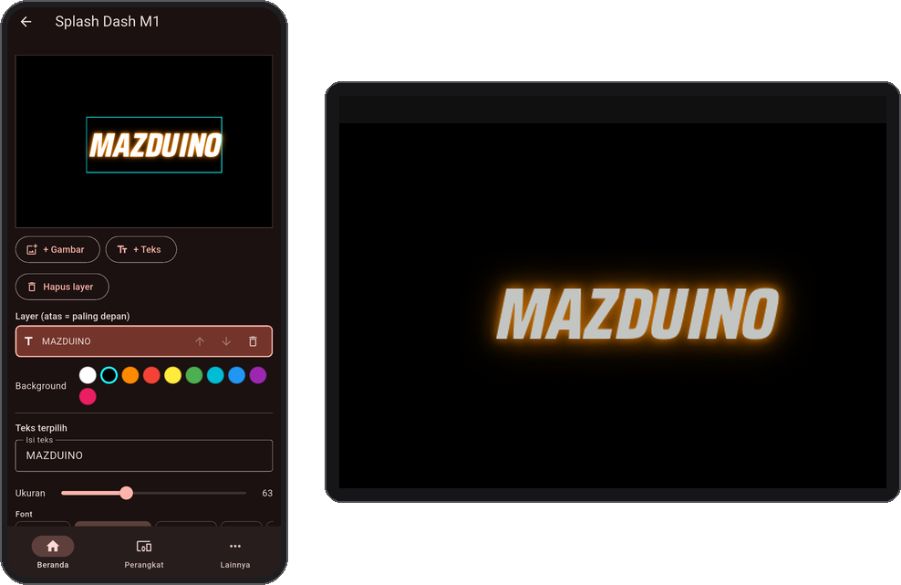
Splash adalah gambar pembuka yang tampil saat dash baru menyala. Splash dibuat langsung di DashTune, tidak perlu lagi membuka Splash Screen Generator di web.
- Buka kartu Splash di Beranda.
- Tekan + Gambar untuk memasang foto atau logo dari galeri HP, dan + Teks untuk menulis teks. Bisa lebih dari satu layer, misalnya gambar background lalu logo di atasnya.
- Ketuk layer untuk memilihnya, geser untuk memindahkan, dan cubit untuk memperbesar atau memperkecil. Untuk teks, atur isi, ukuran, dan font-nya. Warna background dipilih dari deretan warna di bawah preview.
- Tekan Kirim ke Dash.
- Matikan lalu nyalakan lagi dash (cabut daya) untuk melihat splash barunya.
Untuk kembali ke splash bawaan, tekan Hapus splash (kembali default).
7. Update Firmware¶
Buka kartu Update Firmware. DashTune memeriksa versi terbaru untuk dash Anda dan menampilkan versi yang terpasang sekarang.
- Update dari Server — mengunduh dan memasang versi terbaru. Karena WiFi dash tidak punya internet, DashTune mengunduh lewat data seluler, jadi nyalakan data seluler sebelum mulai.
- Pilih File Firmware — memasang file firmware yang sudah ada di HP, misalnya file yang dikirim tim support.
- Flash protokol lain — mengganti firmware ke ECU lain (lihat Protokol CAN).
Kalau data seluler tidak ada, unduh firmware-nya dulu selagi HP punya internet: keluar dari WiFi dash, buka tab Perangkat, tekan menu ⋮ pada dash, lalu Unduh firmware. Setelah itu sambungkan lagi ke WiFi dash dan buka Update Firmware untuk mem-flash file yang sudah tersimpan.
Peringatan: Jangan lakukan update sambil berkendara. Pastikan listrik dash tidak terputus dan aplikasi tidak ditutup sampai proses selesai. Update yang terputus di tengah jalan bisa membuat dash gagal menyala.
Tanya Dina¶
Tombol Tanya Dina di Beranda membuka asisten di dalam DashTune. Tanyakan apa saja seputar pemasangan dan pengaturan dash, misalnya "kenapa RPM tidak muncul?".
Update Firmware¶
Cara yang disarankan adalah lewat DashTune, lihat Update Firmware di DashTune. Dua cara lain tetap bisa dipakai:
- Mazduino Flasher (laptop, lewat WiFi) — tanpa perlu membuka case.
- USB — membuka case Racedash, lalu menghubungkan port/pin USB TTL internal ke komputer secara langsung.
Lewat Mazduino Flasher¶
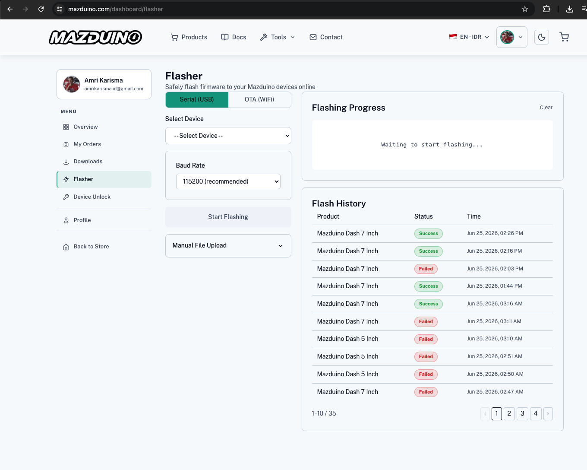
- Login terlebih dahulu ke akun Mazduino di mazduino.com, lalu buka mazduino.com/dashboard/flasher.
- Pilih tab OTA (WiFi).
- Hubungkan laptop ke WiFi "MAZDUINO_Display" yang dipancarkan oleh Racedash, atau pastikan Racedash berada di jaringan WiFi yang sama.
- Pilih model Racedash yang sesuai pada Select Device — pastikan device dipilih dengan benar — lalu klik Start Flashing.
- Tunggu proses flashing selesai. Riwayat proses dapat dilihat pada Flash History.
Cara lama: browser dan halaman 192.168.4.1¶
Sebelum ada DashTune, Racedash diatur lewat browser. Cara ini masih ada untuk yang belum bisa memakai DashTune (misalnya hanya punya iPhone atau laptop), tapi fitur barunya hanya ditambahkan di DashTune.
Display Control di mazduino.com (klik untuk membuka)
- Sebelum berpindah WiFi, buka browser dan akses https://www.mazduino.com/display-control terlebih dahulu selagi HP/laptop masih terhubung internet.
- Setelah halaman terbuka, hubungkan WiFi HP/laptop ke "MAZDUINO_Display" dengan password "12345678" yang dipancarkan oleh Racedash. Koneksi internet akan terputus, namun halaman yang sudah terbuka tetap dapat digunakan.
- Tunggu hingga Racedash terdeteksi otomatis pada Network Scanner. Jika tidak terdeteksi otomatis, masukkan IP Racedash secara manual pada kolom Manual IP Address: 192.168.4.1, lalu klik Test Connection.
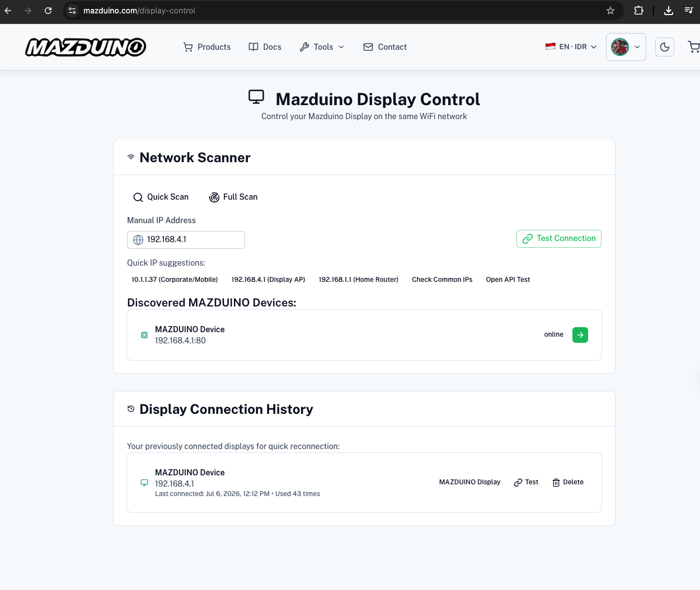
- Setelah terhubung, halaman Display Control menampilkan informasi device serta data CAN Bus/ECU secara real-time.
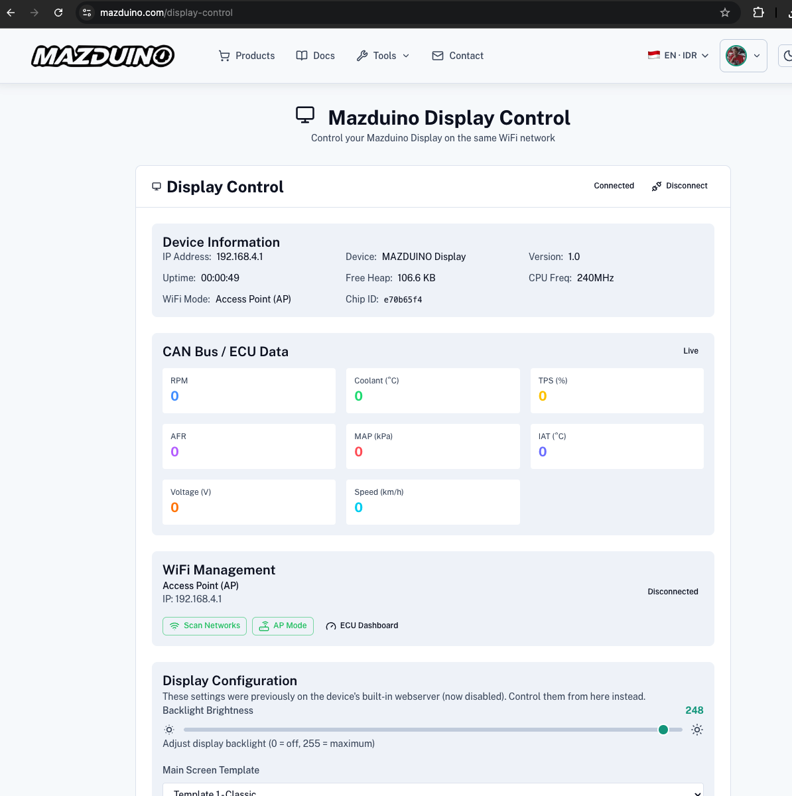
- Atur data yang ditampilkan pada tiap posisi panel, template layar, brightness, dan mode komunikasi (CAN Bus/Serial) sesuai kebutuhan pada bagian Display Configuration.
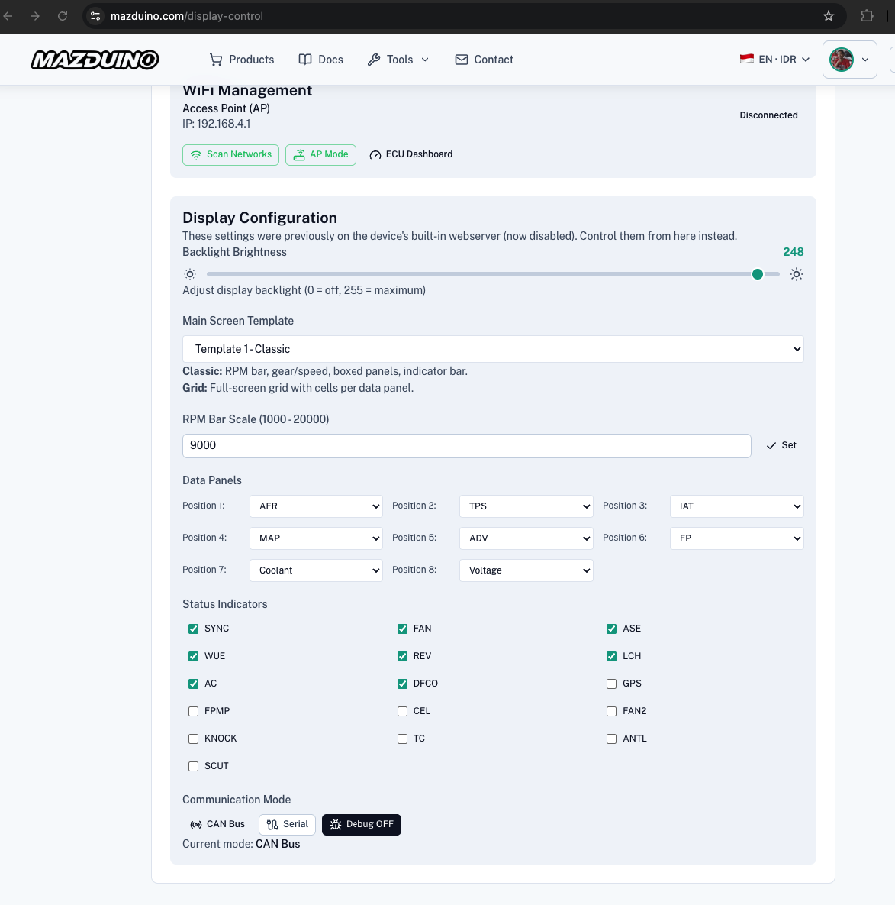
Splash Screen Generator di mazduino.com (klik untuk membuka)
- Buka mazduino.com/splash-generator melalui browser HP/laptop.
- Buat splash screen sesuai keinginan mengikuti instruksi pada halaman tersebut.
- Unggah hasilnya ke Racedash melalui koneksi WiFi "MAZDUINO_Display".
Firmware lama — konfigurasi lewat 192.168.4.1 (klik untuk membuka)
Bagian ini hanya berlaku untuk firmware versi lama, yang masih memakai halaman
konfigurasi lokal di 192.168.4.1. Kalau Racedash Anda sudah menjalankan
firmware terbaru, pakai DashTune dan lewati bagian ini.
- Hubungkan HP/laptop ke WiFi "MAZDUINO_Display" dengan password "12345678".
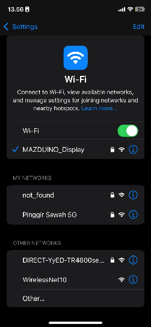
- Setelah terhubung, buka browser dan akses http://192.168.4.1.
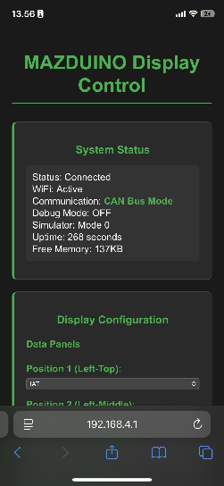
- Atur data yang ditampilkan pada tiap posisi panel sesuai kebutuhan.
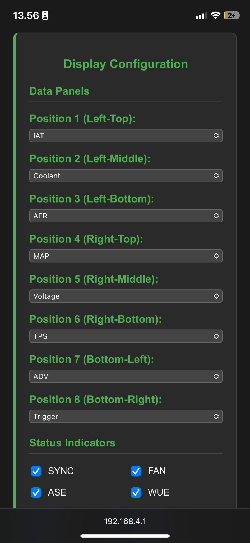
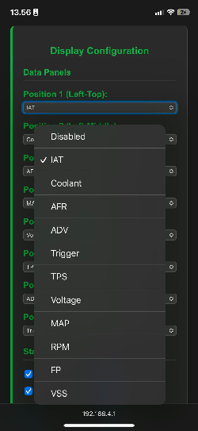
Untuk varian layar lebih besar (4.3", 5", dan 7"), lihat Mazduino Racedash Pro.
Referensi¶
- Website Mazduino - https://www.mazduino.com/
- Wiki Mazduino - https://wiki.mazduino.com/
- Github Mazduino - https://github.com/mazduino/mazduino
Jika butuh skematik dan file pendukung lainnya, tersedia di website Mazduino.